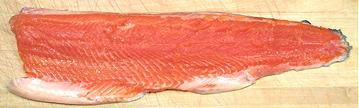

[Oncorhynchs mykiss]
[Oncorhynchs mykiss]
Rainbow / Steelhead was reclassified from Salmo to Oncorhynchs in 1989, so it is now officially a Pacific Trout and considered identical with the Russian trout of the same name. Rainbows are native to the west coast of North America from the Mexican border north and around across the Aleutian Islands to Russia, and as far south as northern Japan. Rainbow trout are now farmed worldwide because the supply of native trout is totally insufficient to meet demand.
Rainbows are generally between 12 and 18 inches long unless they go to sea and become Steelheads. Their bright rainbow colors fade quickly upon death so are not evident in the fish markets. The farm raised rainbow in the photo was 18-1/2 inches long and weighed 2 pounds 5-1/4 ounces factory cleaned, rather larger than average market size. It's flesh was a bright salmon color indicating it was fed a diet including the dye fed to farmed salmon.
More on Trout Family.
Rainbow Trout are now heavily farmed worldwide and U.S. farm production is over 70 million pounds per year (2010). A single farm in Idaho produces over 20 million pounds of that. Aside from farming, they are stocked in rivers and lakes worldwide for recreational fishing, particularly in Europe.
Trout is particularly liked in Europe, but the rivers and lakes there cannot come close to filling the demand. Europeans now eat mostly farmed Rainbows, just as we do here. Some people consider the taste of farmed rainbows or rainbows from lakes inferior and insist on wild river fish. Of course there's no chance wild rivers can deliver that extra 70 million pounds. Without farmed trout every last fish caught would be shipped air express to Japan where paying astronomical prices is thought to greatly enhance flavor and enjoyment.
 This fillet is from the photo specimen fish above. Clearly it was on the "salmon diet" to have that color. The dye used is the same dye that colors salmon and steelhead in the wild and does not affect flavor. The white areas of fat deposits which add richness to the fillet. This was one delicious trout, fried simply with a light dusting of salted rice flour and eaten with my simple Lemon Wine Sauce for Fish.
Cooking: Because it's an oily fish, trout is suitable for fast high temperature cooking such as frying, broiling or grilling, but is too fragile for rough treatment. Small Rainbows are often fried whole or pan dressed. They may also be boned and butterflied for frying. Larger fish are most often fried as skin-on fillets. What you want to do with trout is preserve the excellent flavor. Dust lightly with flour (I use salted rice flour) rather than using batters, and use simple seasonings and sauces that enhance flavor, rather than overpower it. Do not skin the fish because much of the flavor is right under the skin.
Rainbow trout is particularly good for stuffing because the body cavity is long and capacious, and the backbone and ribs are easy to remove. Stuffed fish are generally baked. One stuffing method, particularly popular in Europe, isn't available with factory cleaned fish. In that method the fish is cut from the top, the backbone is removed and the innards taken out through the top. The ribs are then pulled out and the fish is stuffed from the top and baked in it's natural upright position.
Trout may also be baked without stuffing, with slashes on the sides to absorb an herb dressing. Roll-ups are also made by wrapping fillets from small trout around a stuffing, and these too are baked. Trout is often smoked, which works exceptionally well because it's such an oily fish.
Buying: Here in Los Angeles the Asian fish markets don't always trout, but specialty markets serving a more European community certainly do. It is a premium fish and sells at somewhere around 2010 US $3.99/pound for large whole fish.
Scales: Rainbow trout are covered with very small thin scales - so small and thin that only larger fish need to have them scraped off. Probably any over 14 inches should be scraped. You may have to shave the scales off with the sharp edge of your prep knife.
Cleaning: In North America all the farmed fish is shipped "factory cleaned", and I haven't seen a wild trout since childhood. Consequently, I can't tell you much except that with a body cavity that large there's got to be a lot of stuff in there.
Filleting: The only problem filleting this fish is that there are no bones to follow from the top until you get near the backbone. As you cut down from the top of the fish you will meet resistance just before the backbone. This is a row of numerous pin bones you must cut through or break away from the backbone. Once you get over the backbone the ribcage is unusually easy to follow with the knife and you can shave the fillet from the rib cage with almost no flesh left behind.
Once you have the fillet free, set it skin side down and deal with the pin bones. They are easy to locate by feel and pull very easily and cleanly. Pull them out straight forward with your long nose pliers. They become too soft to worry about as you approach the back end of the body cavity.
Skin: Fillets are exceptionally easy to skin using the long knife and cutting board Method. The skin is thin, and enhances the flavor, so rainbows are most often cooked and eaten skin-on. Fillets can be fried skin-on because the skin has very little shrink, and then relaxes. Fry the skinless side first to stiffen the fillet, then flip. You'll see some shrink, but just pat it down with your turner and it will relax.
Yield: Rainbow trout is a very high yield fish. The 2 pound 5-1/4 ounce photo specimen yielded an amazing 1 pound 11-3/4 ounces of fillet (75%) and others have given similar yields. Of course that yield is from a factory cleaned fish, one caught live with all the guts in won't yield that high but it'll still be pretty good.
Stock: Despite being an oily fish, trout heads, fins and bones make a serviceable soup stock, made by our Method. Remove all oil using a gravy separator.
sf_rainbowz 2006 r 100522 - www.clovegarden.com